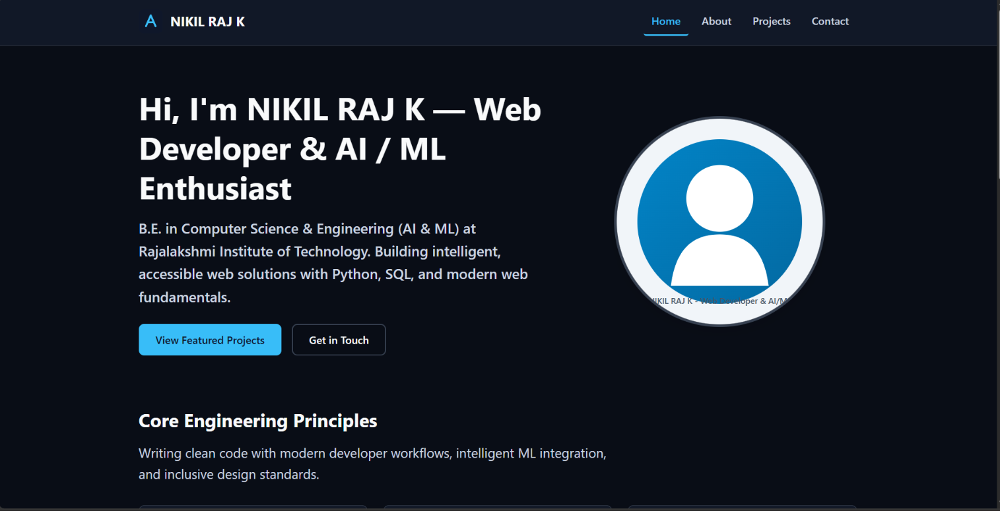

Intelligent Web Solutions
Integrating NLP, semantic similarity matching, and Python backend services with responsive front-end interfaces.
B.E. in Computer Science & Engineering (AI & ML) at Rajalakshmi Institute of Technology. Building intelligent, accessible web solutions with Python, SQL, and modern web fundamentals.

Writing clean code with modern developer workflows, intelligent ML integration, and inclusive design standards.
Integrating NLP, semantic similarity matching, and Python backend services with responsive front-end interfaces.
Modern developer velocity using modern Git, generative workflows, robust fundamentals, and pragmatic execution.
Committed to WCAG 2.2 AA standards, ensuring full keyboard navigation, screen reader accessibility, and color contrast compliance.
Featured projects showcasing AI systems engineering and accessible front-end development.

Built a web app that scores resumes for ATS compatibility, matches them to tech roles using NLP and semantic similarity, and generates personalized skill-gap roadmaps.

A multi-page, high-performance portfolio crafted with semantic HTML5, modern CSS3, and vanilla JS. Achieves 100/100 Lighthouse scores and strict WCAG 2.2 AA compliance.